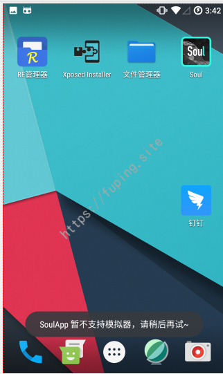
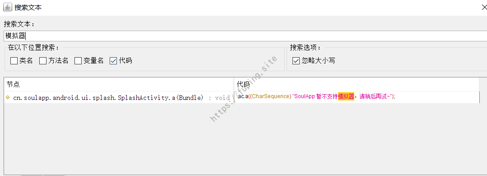
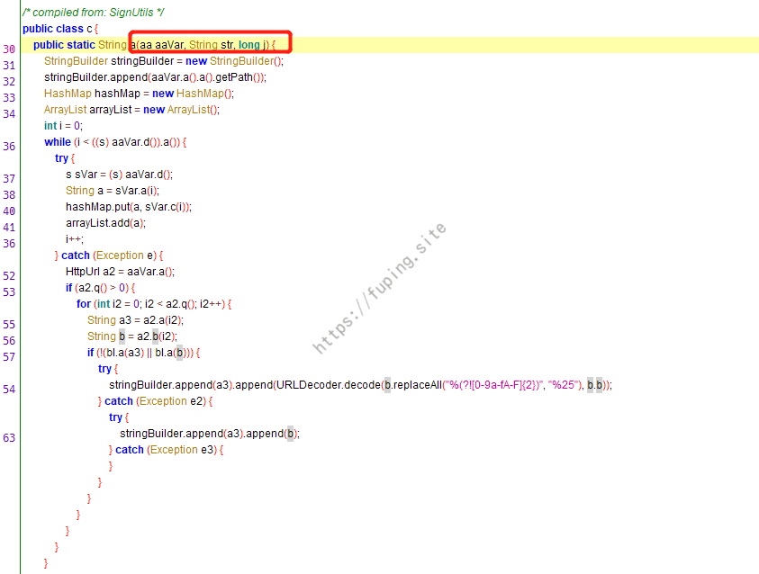
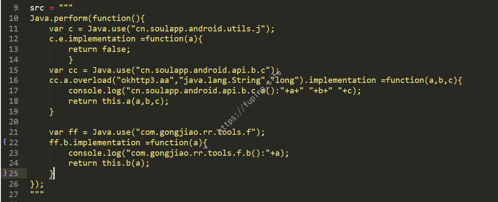
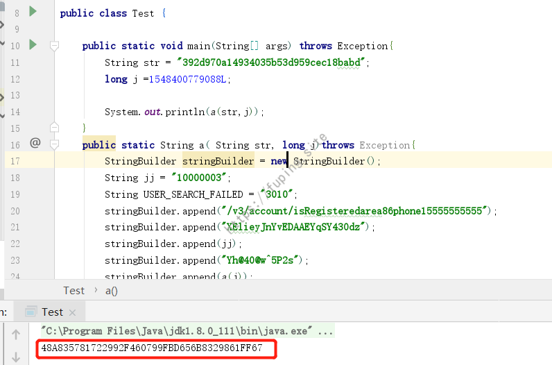
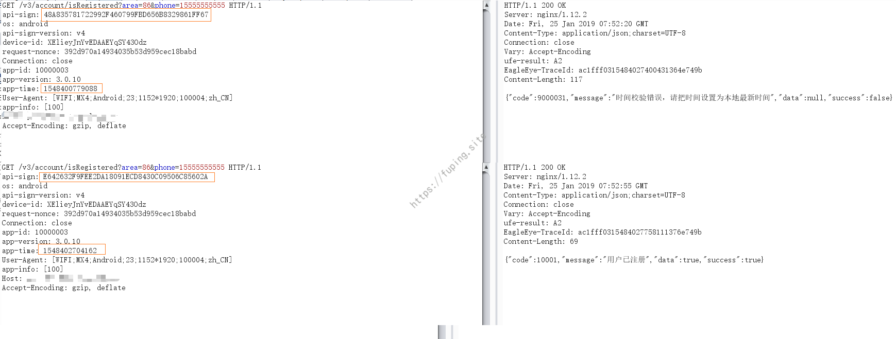
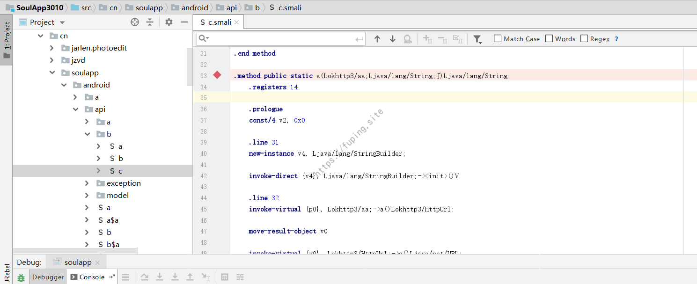
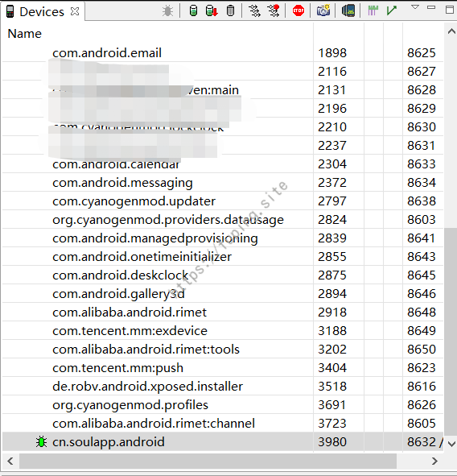
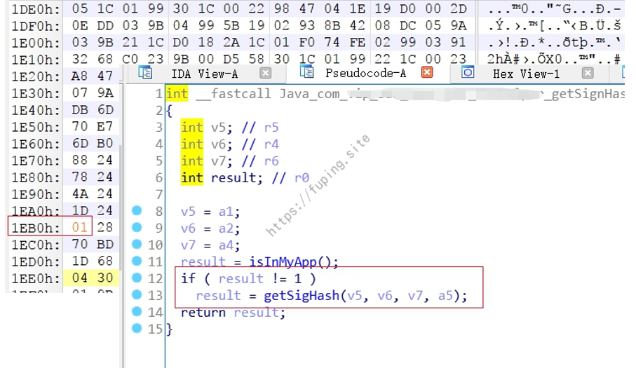

安卓APP测试之HOOK大法-Frida篇
0x01 前言
一般测试APP都是先设置代理，然后抓包进行测试。但是大多数情况下，抓取的数据包都含有参数校验，一旦修改其中一个参数之后，就会返回签名错误。
例如：
还有的有时间校验，当过去某一时间段后，该数据包就失效了。
因此如果想要去重放或者修改数据包进行FUZZ的话，就要弄清楚其中的加密sign值的算法。
本文以某app老版本为例(仅为技术研究)，主要目的是利用Frida进行HOOK进而去获取其api-sign的加密算法。
0x02 环境准备
这里手机采用魅族X4，刷了CM13.0，开启ROOT权限。
APP版本为v3.0.10，下载地址：https://www.wandoujia.com/apps/cn.soulapp.android/history_v18080100
然后就是Frida环境的准备了。
Frida是一款基于Python + JavaScript 的Hook与调试框架，在Android\Linux\Windows等平台均能使用。这里我们以Windows来对Android应用程序进行Hook。Frida的官网地址是：https://www.frida.re。
安装方法也很简单：pip install frida-tools。
手机开启开发者模式，并开启USB调试。
下载frida-server，下载地址为：http://build.frida.re/frida-snapshot/android/arm/bin/frida-server。
上传到手机
1 | adb push frida-server /data/local/tmp/ |
添加权限
1 | root@mx4:/ #chmod 777 frida-server |
手机上运行frida-server，命令如下：
1 | root@mx4:/ #./data/local/tmp/frida-server |
端口转发,电脑上运行如下命令:
1 | adb forward tcp:27042 tcp:27042 |
环境准备好了，就开始对APP进行测试。
0x03 利用Frida进行HOOK
安装后打开APP。

发现APP闪退，并提示SoulApp 暂不支持模拟器，请稍后再试~。
用jadx打开apk文件，搜索关键字模拟器。

只有一处，我们点进去。

其中有个判断，如果cn.soulapp.android.utils.j.e()为true，则提示不支持模拟器，并退出程序。点进这个方法查看。
其中有多个判断，如果一个为true，则返回true，最简单有效的方法就是hook，直接令其返回为false。使用Frida进行hook，代码如下：
运行后，发现再次打开app，可以顺利进入了。

输入手机号，点击确定。
提示网络错误，这是因为使用了代理，所以报错，但是有数据包的。可以暂时先不管这里。我们目的是获取sign值的加密算法。这里是获取api-sign的加密算法。
数据包内容
数据包中有api-sign，所以直接利用jadx搜索api-sign。
发现在cn.soulapp.android.api.b.b.b()中有调用，进入查看。
api-sign值的获取调用了cn.soulapp.android.api.b.c.a方法。

这里是创建了一个stringBuilder，经过拼接后，调用com.gongjiao.rr.tools.f.b进行sha1加密，并转换为大写。我们需要知道cn.soulapp.android.api.b.c.a三个参数的值是什么。
1 | aVar.b("api-sign", c.a(aaVar, replaceAll, currentTimeMillis)); |
根据代码可以推测，第一个参数aaVar是类okhttp3.Request的实例化；
第二个参数replaceAll是获取的UUID去除中间的"-"；
第三个参数是当前时间戳减去cn.soulapp.android.api.a.a()。这个值是从soul_share.xml中读取ApiConstants_timeDiff的值，查看soul_share.xml发现内容为空。
所以第三个参数为当前的时间戳。
查看cn.soulapp.android.api.b.c.a方法，前半部分是对aaVar进行操作，大概是获取请求的路径，然后对参数进行拼接。
看后半部分的代码：
这里第71行中的UTDevice.getUtdid(SoulApp.b())为设备号，即数据包里面的device-id；
第72行的a.j为固定值，这里为10000003；
第73行这个值需要获取，可以用hook获取；
第74行a(j)是将传入的时间戳(第三个参数)进行转换；
第75行是拼接了传入的第二个参数；
第78行拼接了固定值3010；
然后第80行调用com.gongjiao.rr.tools.f.b对stringBuilder进行加密，并转换为大写。
可以通过hook的方法直接获取cn.soulapp.android.api.b.c.a和com.gongjiao.rr.tools.f.b的参数。
主要代码：

由于
cn.soulapp.android.api.b.c中有多个a方法，所以这里用了重载，指明参数类型来确定是哪个方法。
运行效果

知道了加密算法以及参数，就可以自己实现加密获取api-sign了，如下所示：

api-sign值可以获取了，我们试一下能否利用。由上面知道代理抓包时数据包返回400，经过查看代码是可以解决这个问题的。这里不详细说明。

发现该方法获取api-sign是可行的。
0x04 其他问题
1.不进行hook获取参数的内容或者查看调用堆栈的方法
可以通过动态调试的方法进行查看。
首先将apk反编译为smali文件，然后IDEA安装smalidea插件。下载地址：https://bitbucket.org/JesusFreke/smali/downloads/
反编译的命令如下：
java -jar baksmali-2.2.2.jar d 106_3ce8a91b116f3ca28175affa3d12083f.apk -o SoulApp3010/src
然后导入到idea中
然后在需要查看的地方下断点。
例如在cn.soulapp.android.api.b.c.a下断点

打开Run/Debug Configurations，添加一个远程调试，端口8700
运行app，然后在Android Device Monitor中选中

打开调试按钮，点击手机上的确定，进入调试。
2.加密的算法在so文件中
简单的方法就是获取调用so中方法的参数，然后自己写一个app，调用其so文件。
如果有判断的话，可以修改so文件达到可以调用的目的。
如上所示，该so文件有判断，如果isInMyAPP为false，则会退出，返回null。
我们可以修改CMP R0,#0为CMP R0,#1来绕过该限制。
修改后

更深入的就是对so文件进行分析，找到其中的加密算法。
0x05 总结
Frida不仅可以用于hook java层，也可以进行native层的hook。利用Frida进行hook时，要求需要使用已ROOT的手机，对于手机无法ROOT的，安装VirtualXposed后使用Xposed框架也可以进行HOOK。这里就不说明了，有兴趣的可以去试一试。